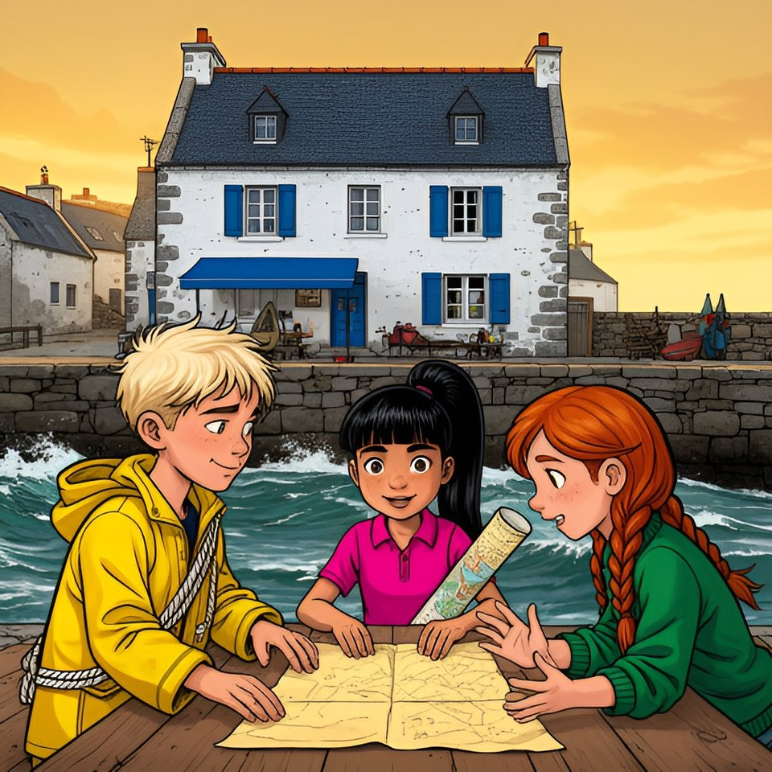

Titistoire › Les Galaxies (8-10 ans)
Le traité de la crêperie
Le Trésor coupé en deux, épisode 2 sur 8 : un feuilleton à énigmes sur l'île de Lodenn.

▶ Écouter et regarder l'histoire
Gratuit, sans inscription : la voix lit, le texte suit mot à mot, les images tournent comme dans un album.
Le texte de l'histoire
Sur l'île de Lodenn, les Bottes — Maël, Enora et Tino — ont récité leur comptine devant les Tongs, et Victoire en est devenue toute pâle. Le soir, pendant que Maël riait de sa moitié de carte, Victoire a déroulé la sienne devant Awa et Oscar.
La moitié des Bottes commence cinq phrases : « Qui me lit seul — mon trésor est — il dort sous la — du chemin qui — venez à deux. » Celle des Tongs en finit cinq : « Me lit de travers. Aux jumelles. Dernière pierre. Marche sur la mer. Le jour de la grande maline. »
Le lendemain matin, Tino et Oscar se retrouvèrent dans la chapelle, tout en haut de l'île : la seule cachette où aucun chef n'irait les chercher. Au-dessus d'eux se courbait un plafond de bois sombre, avec des côtes. On se serait cru dans une baleine.
« Je ne dois le répéter à personne, commença Tino. Donc je te le répète. Maël a une moitié de carte, avec notre comptine dessus. — Victoire aussi, chuchota Oscar. Mais ses phrases à elle n'ont pas de début. » Dans la baleine, on n'entendait plus rien.
Tino récita : « Qui me lit seul… » Oscar, qui retenait tout ce qu'il entendait une fois, chantonna : « … me lit de travers. — Mon trésor est… — … aux jumelles. » Ça collait. Ils recommencèrent depuis le début, une moitié chacun, de plus en plus vite.
Et cela donna : « Qui me lit seul me lit de travers. Mon trésor est aux jumelles. Il dort sous la dernière pierre du chemin qui marche sur la mer. Venez à deux le jour de la grande maline. » Oscar souffla : « Tadam. »
« Quatre phrases, compta Tino. Deux moitiés. Deux chefs à prévenir. — Dis donc, Onit, c'est toi à l'envers ? Alors moi, je suis Racso. » Oscar répéta le mot deux fois et trouva qu'il lui allait bien. « Reçu, Racso. On court. »
Ils dévalèrent la lande le long du muret. Sans ralentir, Tino glissa le bras dans le trou d'une pierre percée, des fois qu'on y aurait laissé un bonbon, et le ressortit vide, comme toujours. À la plage des Dames, personne ne les écouta : c'était jour de régate.
Les petits voiliers de l'école de voile filaient vers la bouée. Maël lisait la mer mieux que personne ; mais Awa, la meilleure barreuse de la plage, allait droit comme un trait de règle. Elle le battit d'une longueur de bateau. « Calme plat », annonça Maël. Et il se tut.
Sur le sable, Oscar voulut savoir comment on allait si droit. « Un alignement, expliqua Awa. Tu mets deux repères l'un derrière l'autre, et tant qu'ils ne bougent pas, tu es sur la bonne ligne. — Et pour savoir où tu es sur la ligne ? — Il t'en faut une deuxième. »
Tino tirait Maël par le ciré. « La comptine, elle colle avec… — Plus tard, Tino. » Awa, elle, savourait son triomphe jusqu'à la dernière goutte. « En fait, pourquoi il est rose, votre Môle ? — Il est rose ? » Maël le regardait depuis onze ans. Il ne l'avait jamais vu.
Les deux petits essayèrent encore, chacun sa bande. On leur répondit « oui, oui », « tout à l'heure » et « pousse-toi, tu es devant la bouée ». Ils savaient ce que personne ne savait depuis deux cent cinquante ans, et il n'y avait pas une oreille de libre sur toute la plage.
L'après-midi, la mer s'en alla, presque aussi loin que la veille, et coucha les bateaux sur le sable du port. Gwenola en profita pour passer le balai-brosse sous le Va-et-Vient. « Tu brosses quoi ? s'informa Oscar. — La carène. Le ventre du bateau, si tu préfères. Tiens, embarque une brosse ! »
Oscar préféra s'éloigner vers la cale, où Job veillait sur ses flotteurs, et demanda quand on reverrait « les Chanteurs ». Le vieux leva sa craie. « Les Chanteuses. Depuis que tu es là, hirondelle, tu m'écorches tous les cailloux de l'île. Écoute un peu, ça te servira. »
« Mor, la mer. Bihan, petit — demande à Maël Le Bihan ce que ça lui fait. Men, la pierre. Hir, long. Avec ça, tu lis la moitié de la Bretagne. — Et Lodenn, ça veut dire quoi ? demanda Oscar. — Hein ? » fit Job. Il était redevenu sourd d'un seul coup.
Tino, lui, riait aux larmes. Maël Le Petit ! Lui, le plus grand des Bottes, qui les dépassait d'une tête ! Tino jura de ne jamais le répéter, et tint parole presque une heure.
Le lendemain, l'ardoise annonçait quatre-vingt-neuf : la mer commençait à bouder. Pendant que les Tongs rinçaient un voilier, une dame entra dans la Cabine. Du moins, on entendit sa voix : « Recensement des cabines de plage ! Combien de serviettes ? Combien de bouées ? Ne bougez pas, je compte moi-même. »
La dame avait dix ans, un pull vert, deux tresses rousses et, quand Victoire poussa la porte, le nez sur le parchemin. Enora ne se troubla pas. « La vérité vraie, c'est qu'on recense aussi les cartes. C'est la loi, depuis mille huit cent quatre. — En fait, cette loi n'existe pas », rectifia Awa.
Victoire ne cria pas. Elle regarda le parchemin, puis Enora. « Je propose un marché. Vous avez les débuts, nous avons les fins. Terrain neutre, cinq heures. — La crêperie, répondit Enora de sa vraie voix. Elle est à mes parents, mais les crêpes sont neutres. »
À cinq heures, six enfants s'assirent à la même table, sous l'enseigne de la crêperie : une dame de bois, penchée en avant, qui riait. Fañch, le papa d'Enora, tournait ses crêpes en chantant : « Le capitaine avait de l'or, hisse et ho, la Rieuse ! il n'en a plus, il rit encore. » Sur le parapet, un goéland bagué de bleu attendait sa part de tout : on l'appelait le Douanier.
Victoire ouvrit un carnet. « Clause un : personne ne lâche sa moitié. — Clause deux, dicta Maël : personne ne dit votre île. — Clause trois, ajouta Enora : rien ne se décide sans les deux bandes. Et ce qu'on trouve… — Part à deux ! » lancèrent les deux chefs, furieux d'avoir parlé ensemble.
« Clause quatre : le banc du bout du Môle… — Négatif. — Objection. » On remit le banc à plus tard. Restait à savoir qui signerait en premier : trois mains contre trois. Enora leva les bras comme un arbitre, puis posa deux bouts de crêpe sur le parapet, un par camp.
Le Douanier pencha la tête, rafla celui des Tongs et s'envola. « Marché conclu », déclara Victoire. Maël annonça un avis de coup de vent, et signa quand même. Désormais, à trois contre trois, ce serait le goéland qui trancherait.
Alors Maël ouvrit la boîte à biscuits, Victoire le tube de cuir, et les deux moitiés avancèrent l'une vers l'autre sur la table, chacune tenue par son propriétaire. Les dents de loup se cherchèrent, se trouvèrent. Les deux bords s'emboîtèrent comme deux mâchoires.
Un monsieur en chemise rose vint chercher une crêpe, le téléphone à la main : le père de Victoire. « Techniquement, c'est une charte-partie. Autrefois, on écrivait un contrat sur une seule feuille, on la coupait en deux, et il ne valait que si les deux bords s'emboîtaient. » Il repartit vers le bout du Môle.
Sur la table, Lodenn nageait de nouveau d'un seul morceau. La tache de vin des Bottes et la signature des Tongs se rejoignaient : cela faisait une jetée, à l'encre rouge. Tino lut tout haut : « Mon tréfor eft aux jumelles. — Ce n'est pas un f, s'agaça Victoire. C'est un s long. »
Il y avait aussi deux traits de crayon, fins comme des cheveux. Le premier partait du clocher, passait sur la Croix et s'arrêtait à la découpe. Le second partait d'entre les deux rochers, passait sur la petite maison de la Miette et s'arrêtait à la découpe, lui aussi. Aucun des deux ne menait nulle part.
Mais le plus étrange courait le long de la découpe. Là où chaque moitié, seule, n'avait jamais montré que des griffures, il y avait maintenant des lettres. Victoire, qui savait lire les vieilles écritures, les suivit du doigt.
« Avant la maline, quatre leçons. La première t'attend au bout du chemin que la mer reprend, dans la maison sans lit ni feu, au toit de pierre. Cherche l'ancre qui n'a jamais mouillé. » Elle leva le nez. « Ancre, avec un a. »
« En fait, relis, demanda Awa. Plus lentement. » Victoire relut, un mot après l'autre : « Avant la maline, quatre leçons. La première t'attend au bout du chemin que la mer reprend, dans la maison sans lit ni feu, au toit de pierre. Cherche l'ancre qui n'a jamais mouillé. »
« Ça n'existe pas, objecta Tino. Mouiller, c'est jeter l'ancre. C'est pas moi qui le dis, c'est Gwenola. — Une ancre qu'on n'a jamais jetée, alors, calcula Awa. Une ancre toute neuve. » Une ancre neuve, vieille de deux cent cinquante ans : cela ne tenait pas debout.
Et puis, des leçons ! Personne n'était venu pour des leçons. Six têtes remontèrent vers le haut de la carte, et tout le monde conclut en même temps : le trésor, les Jumelles, la Chaussée qui y mène, le jour de la grande maline. Dans treize jours.
À la table voisine, un homme en veste grise terminait sa crêpe sans lever les yeux de sa tablette. Il n'avait pas tourné la tête une seule fois. Il plia sa serviette, laissa passer une dame, et regagna le port, où l'attendait son bateau gris. Le Hérisson, comme l'appelait déjà Enora.
Restait la première leçon. Où était-il, ce chemin que la mer reprend ? Et la maison sans lit ni feu ? Les Tongs cherchaient en l'air, les Bottes au fond de leurs bottes. Maël, lui, regardait la mer remonter dans le port. Il dit seulement : « Demain, soixante-dix-huit. Après-demain, trop tard. »
Pourquoi demain ? Personne n'osa le lui demander. Ce soir-là, la mer revint border Lodenn, comme tous les soirs. Sur l'ardoise de la cale, Job écrivit le chiffre du lendemain : soixante-dix-huit.
Épisode suivant : Le chemin que la mer reprend